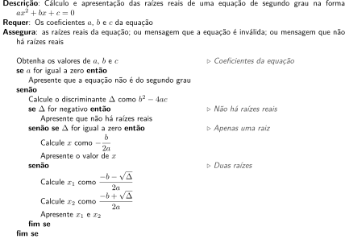

1 Noções de algoritmos
Um algoritmo é uma descrição de passos que, se seguidos, levam à solução de um determinado problema e, genericamente falando, quaisquer instruções, orientações ou coisa similar podem ser classificadas como um algoritmo.
A partir dessa óptica, há uma infinidade de algoritmos. Quando se trata de computação e mais especificamente de programação, há um subconjunto dos algoritmos com características mais particulares. Este capítulo trata da contextualização dos algoritmos computacionais.
1.1 Características gerais dos algoritmos
Por exemplo, as instruções de como higienizar uma máquina de lavar roupas são um algoritmo. Esse algoritmo parte do pressuposto de uma máquina de lavar para ser higienizada, descreve os passos para serem seguidos (deixar o cesto vazio, acrescentar a água sanitária, deixar em um ciclo específico por um determinado tempo) e atinge o resultado desejado, que é a máquina limpa.
A montagem de uma estante comprada online também segue o algoritmo estabelecido no manual de montagem, tendo como objetivo partir de um conjunto de peças separadas e obter a estante montada e funcional. Os passos passam pela verificação da disponibilidade de todas as peças e ferramentas necessárias, montagem organizada das diversas partes e devidas finalizações.
Um último (e clássico) exemplo é uma receita culinária, a qual parte dos ingredientes constituintes e chega a um bolo, um assado ou outro prato qualquer.
Todos esses algoritmos possuem três elementos principais:
- A situação inicial;
- A sequência de passos que devem ser seguidos;
- A situação final.
A situação inicial são as pré-condições, ou seja, o que tem haver antes da execução dos passos para que todas as ações possam ser seguidas de forma adequada. Os passos determinam as ações que devem ser executadas e uma ordem coerente para que aconteçam. As pós-condições caracterizam a situação final, ou seja, a completude do que o algoritmo se propôs a resolver.
Na Tabela 1.1 são apresentados esses elementos para dois exemplos específicos, ilustrando-os de forma simplificada.
| Cocção de um pão | Atualização de um saldo bancário | |
|---|---|---|
| Pré-condições | Disponibilidade dos ingredientes e utensílios necessários | O saldo anterior e todas as movimentações no período |
| Passos | Preparação da massa, descanso, crescimento, forno | Atualização do saldo passando-se por cada movimentação individual |
| Pós-condições | Pão | O saldo atualizado |
Esta definição não se aplica, em particular, à receita do pão indicada na Tabela 1.1. O resultado tende a variar consideravelmente dependendo de uma variedade de situações não mencionadas, como o tipo e a qualidade da farinha, a temperatura ambiente que influencia no crescimento da massa e o forno usado, que pode aquecer mais ou menos que outro forno, por exemplo. Para se garantir um resultado sempre “igual”, todas essas variáveis deveriam entrar nas pré-condições. Felizmente, essas variações são toleradas no resultado final da receita, sendo até esperadas tais diferenças. As pré-condições e pós-condições podem, dependendo do caso, ter graus de especificidade variados.
Essa variação de resultados, porém, não é tolerada na atualização do saldo bancário. Dado o mesmo saldo inicial e as mesmas movimentações, o resultado não pode ser diferente sob nenhuma hipótese. Tem que haver uma previsibilidade do resultado. Neste caso, pré e pós-condições são bastante determinísticas.
Os algoritmos com resultados e passos mais maleáveis, que toleram certas variações no resultado final, enquadram-se como algoritmos gerais. Entre eles estão as receitas, instruções de montagem de móveis, orientações para se chegar a um destino com GPS ou instruções de como inserir um novo contato na agenda do telefone. Em todos eles, até a vivência e experiências pessoais de quem os executa podem ter influência no resultado. Há pessoas com ótima mão para fazer bolos, por exemplo.
Se for pedido a um humano que converta 95 Fahrenheit para graus Celsius, ele pode usar seu smartphone para abrir uma ferramenta de busca, digitar “quanto é 95 farenheit em celsius” (sim, com o erro de digitação) e obter a resposta de 35oC. Ele poderia estar sem bateria e optado por usar um computador para fazer a busca; poderia também ter escolhido uma ferramenta de busca no lugar de outra; poderia até ter digitado o texto da consulta de diversas outras maneiras distintas. Esse humano poderia também ter boa memória e se lembrar da fórmula, além de ter facilidade para fazer contas de cabeça e dar o resultado sem nenhum outro recurso a não ser ele mesmo.
1.2 Algoritmos computacionais
Existe uma classe particular de algoritmos para os quais há um maior rigor nos mais diversos aspectos e eles não podem depender da experiência ou interpretação de que os executa. Esses são os algoritmos escritos para serem executados, em última instância, por um sistema computacional (processador e memória eletrônicos) e, para tanto, têm que ser extremamente claros e precisos em cada instrução a ser executada, bem como possuem pré-condições e pós-condições bastantes específicas.
Caso um sistema computacional, ou seja, um programa, deva realizar a mesma tarefa, ele tem que ter bem definidas todas as etapas. As pré-condições, por exemplo, definiriam que o valor deveria ser um número real, os passos indicariam o cálculo da conversão e qual seria a expressão usada e, finalmente, o resultado produzido como pós-condição estaria bem definido.
1.2.1 Fluxogramas
Os fluxogramas são representações visuais com os passos que implementam cada algoritmo. Os símbolos (caixas) possuem formas específicas para cada função e setas as ligam indicando a ordem em que devem ser executadas. Na Figura 1.1 é apresentado um fluxograma para o cálculo das raízes reais de equação de segundo grau e apresentação de mensagens de erro nos casos adequados.
1.2.2 Pseudocódigo
Como alternativa aos fluxogramas, é bastante comum o emprego do chamado pseudocódigo, o qual se assemelha a programas, mas é uma abstração da solução. O Algoritmo 1.1 é apresentado na forma de pseudocódigo.
O Algoritmo 1.1 se refere à mesma solução lógica da Figura 1.1.
Algoritmo 1.1: Pseudocódigo para o cálculo e apresentação das raízes reais de uma equação de segundo grau.

1.3 Algoritmos e programas
O Algoritmo 1.2 é um algoritmo computacional simples com uma solução para a conversão de temperaturas entre duas escalas termométricas: de graus Celsius para Fahrenheit.
Algoritmo 1.2: Conversão de graus Celsius para Fahrenheit.
Para exemplificar como esse algoritmo pode se tornar um programa, seguem exemplos de sua implementação em algumas linguagens distintas, sendo importante salientar a grande variação de formatos de comandos e da estrutura de cada linguagem.
Pascal:
(*
Conversão de escalas termométricas, de graus Celsius para Fahrenheit
Requer: a temperatura em graus Celsius
Assegura: a temperatura em Fahrenheit
*)
program ConversaoTemperaturas;
var
Celsius, Fahrenheit: real;
begin
read(Celsius);
Fahrenheit := 9 / 5 * Celsius + 32;
write(Fahrenheit:5:2);
end.Python:
# Conversão de escalas termométricas, de graus Celsius para Fahrenheit
# Pré-condição: a temperatura em graus Celsius
# Pós-condição: a temperatura em Fahrenheit
celsius = float(input())
fahrenheit = 9 / 5 * celsius + 32
print(f"{fahrenheit:.2f}")C:
/*
Conversão de escalas termométricas, de graus Celsius para Fahrenheit
Requer: a temperatura em graus Celsius
Assegura: a temperatura em Fahrenheit
*/
#include <stdio.h>
int main(void) {
char entrada[160];
fgets(entrada, sizeof entrada, stdin);
double celsius;
sscanf(entrada, "%ld", &celsius);
double fahrenheit = (double)9 / 5 * celsius + 32;
printf("%.2f", fahrenheit);
return 0;
}R:
# Conversão de escalas termométricas, de graus Celsius para Fahrenheit
# Pré-condição: a temperatura em graus Celsius
# Pós-condição: a temperatura em Fahrenheit
celsius <- as.numeric(readline(""))
fahrenheit <- celsius * 9 / 5 + 32
cat(fahrenheit, "\n")Java:
// Conversão de escalas termométricas, de graus Celsius para Fahrenheit
// Pré-condição: a temperatura em graus Celsius
// Pós-condição: a temperatura em Fahrenheit
import java.util.Scanner;
public class ConversorTemperatura {
public static void main(String[] args) {
Scanner scanner = new Scanner(System.in);
double celsius = scanner.nextDouble();
double fahrenheit = celsius * 9 / 5 + 32;
System.out.println(fahrenheit);
scanner.close();
}
}Ada:
-- Conversão de escalas termométricas, de graus Celsius para Fahrenheit
-- Pré-condição: a temperatura em graus Celsius
-- Pós-condição: a temperatura em Fahrenheit
with Ada.Text_IO; use Ada.Text_IO;
procedure Conversor_Temperatura is
Celsius : Float;
Fahrenheit : Float;
begin
Get(Item => Celsius);
Fahrenheit := Celsius * 9.0 / 5.0 + 32.0;
Put_Line(Float'Image(Fahrenheit));
end Conversor_Temperatura;Lua:
-- Conversão de escalas termométricas, de graus Celsius para Fahrenheit
-- Pré-condição: a temperatura em graus Celsius
-- Pós-condição: a temperatura em Fahrenheit
local celsius = tonumber(io.read())
local fahrenheit = celsius * 9 / 5 + 32
print(fahrenheit)Existe, claramente, uma distância entre a solução (algoritmo) e sua implementação (código da linguagem).
O principal conceito por trás dos algoritmos é ter uma solução mais abstrata, a qual não se restringe aos detalhes que cada linguagem impõe e, entretanto, apresenta uma solução simples de entender e objetiva quanto a como o problema abordado é resolvido.
Este livro não aborda o desenvolvimento de algoritmos, porém faz uso deles quando necessário, dada a inteção de deixar clara uma solução antes de apresentar sua implementação em C. Esta estratégia visa auxiliar o programador menos experiente ou com menor familiaridade com a linguagem a identificar o que fazem as instruções do programa.